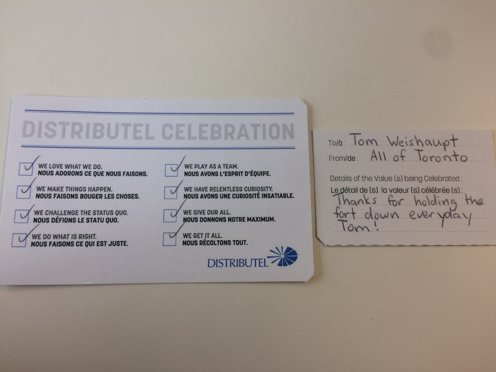
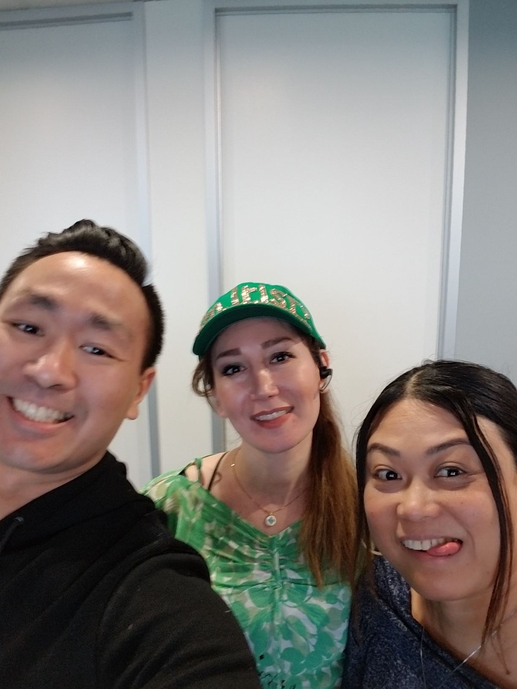
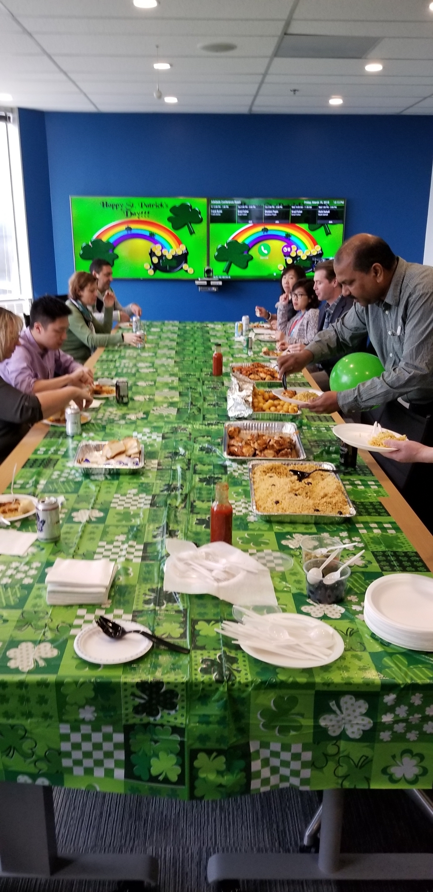
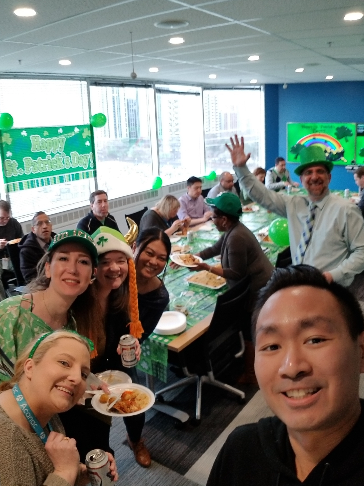
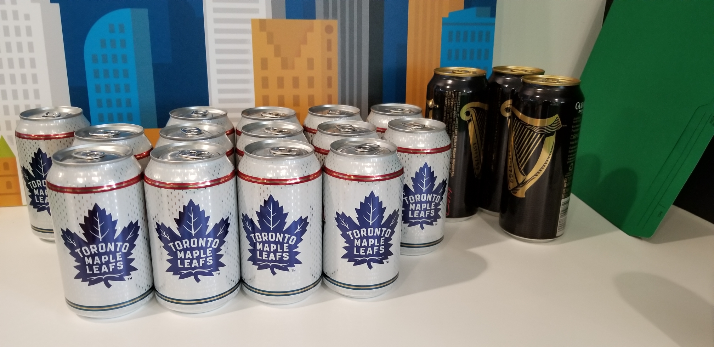
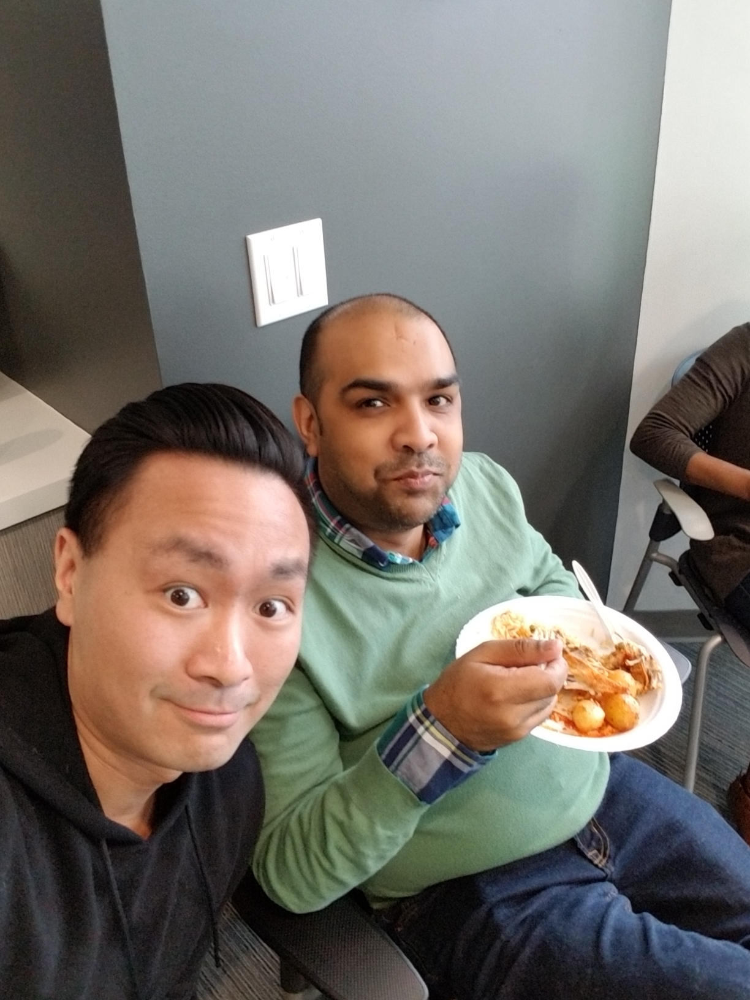
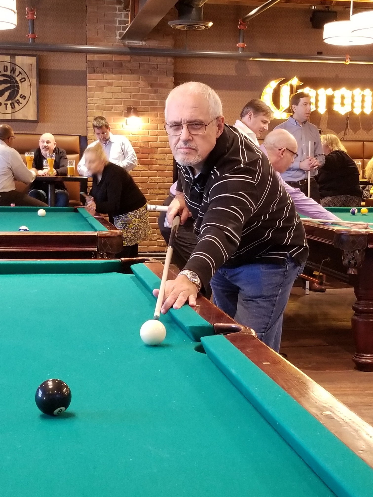
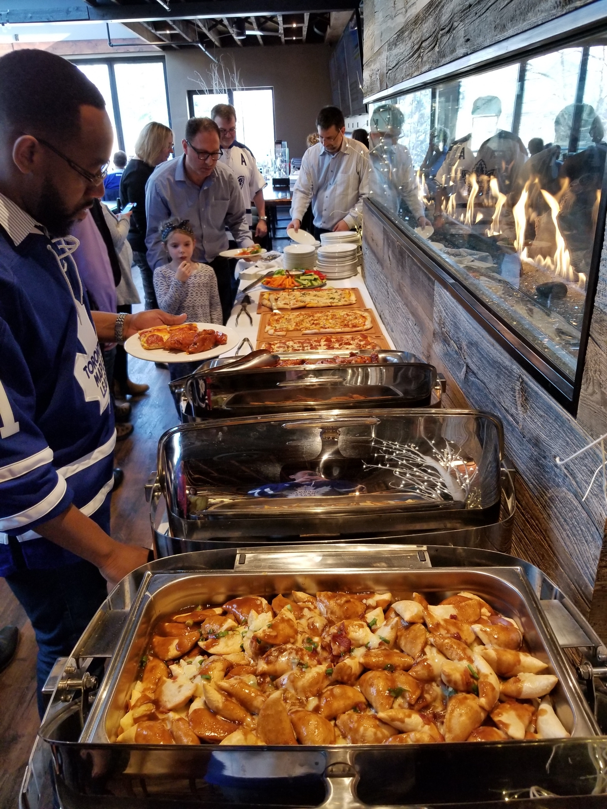
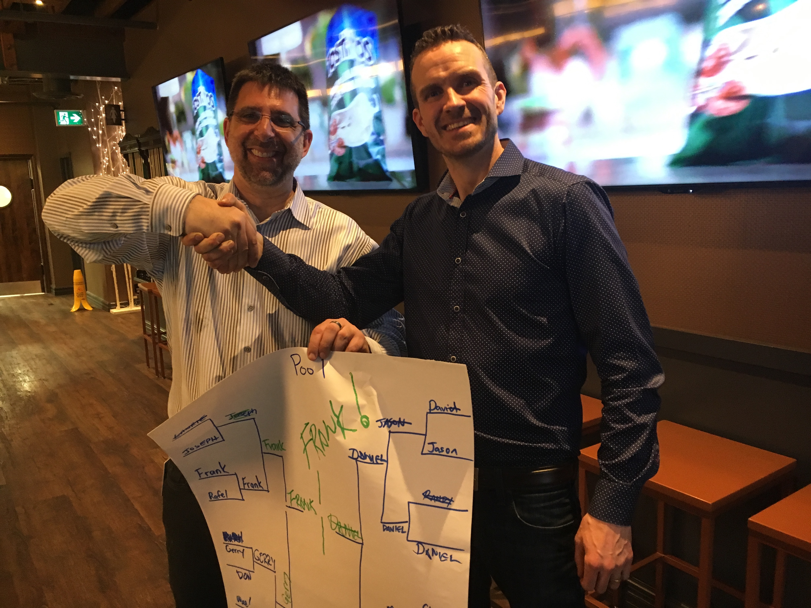

Toronto Social Committee Update
"It's been a long time. I shouldn't have left you, without a strong rhyme to step to." --Rakim
Greetings! It has been WAY too long! Distributel is celebrating it's 30th anniversary so we kick off this newsletter with a classic 30 year old hip hop lyric! Since our last newsletter, we had a great holiday party, moved to a fantastic new office, Matt's new podcast is topping the charts, enjoyed a St. Patricks day lunch and most recently our event at the Crooked Cue which was a blast! Here are a few updates from the Social Committee:
- Pub Night - Going forward will be regularly sending out an open invitation to anyone who would like to go across the street after work to socialize. This is not an official company event but just regular occurance where we can get together for some socializing and fun. Our first Pub night will be on Thursday May 3rd. I will send an offical email soon
- Summer Party - We are planning something special for you and will give update with the details ASAP
- Glassdoor Reviews - Have you filled out your review of Distributel on Glassdoor yet? It only takes a few mins and would be greatly appreciated. Please click the link below

Staff Announcements Updates and New Hires.
We welcomed several new employees in Toronto since we last spoke. If you haven't done so already, please stop by and introduce yourself.
- Anusha Patnam - Software Developer
- Shaun Randall - Director, Marketing Programs & Communications
- Vasile Patrasc - Sr. Software Developer
- Thilini Perera - Wholesale Relations Manager
Welcome to Distributel Everyone!!!!
The Hogtown 6
Aberfoyle's Most Wanted

Brad Fisher
Favorite Hobby/Pastime:
Playing/Coaching Hockey
City/Town where you grew up:
Unionville, ON
Postition and tenure with the company:
Chief Revenue Officer, (8 months)
Favorite Food:
Does it pair well with a nice Cabernet?
Favorite TV Show:
Hawaii 5-0
Favorite Book:
Newton’s Telecom Dictionary
Great Canadian Destination:
Any ski resort with at least 2,000 ft of vertical descent

Janine Montgomery
Favorite Hobby/Pastime:
A mixture of yoga and visiting breweries
City/Town where you grew up:
Belfast, Northern Ireland
Postition and tenure with the company:
Accountant
Favorite Food:
Has to be a lovely medium steak
Favorite Movie:
Anything scifi or action!
Favorite Book:
Hitchhikers guide to the galaxy - Douglas Adams
Great Canadian Destination:
Newfoundland, I really wanted to go there as soon as I can!

Ramily Leda
Favorite Hobby/Pastime:
I write poetry; I love to watch movies, go shopping and explore restaurants
City/Town where you grew up:
Iloilo, Philippines
Postition and tenure with the company:
Wholesale Account Relations Manager; 2 years & 6 months
Favorite Food:
Japanese, Spanish and Filipino cuisines
Favorite TV Show:
The Walking Dead; Game of Thrones; Big Bang Theory and HGTV Shows
Favorite Book:
The Joy Luck Club of Amy Tan; The Godfather by Mario Puzo
Great Canadian Destination:
I never get tired of Niagara Falls
Mark Morais
Favorite Hobby/Pastime:
I have a severe technology addiction.
City/Town where you grew up:
Toronto
Postition and tenure with the company:
VP Customer Care 3.5 years
Favorite Food:
Ramen, steak, sushi, pizza
Favorite TV Show/Movie:
Arrested Development – All time #1,
Last Man On Earth – current #1
Favorite Book:
American Gods – Neil Gaiman. Really, anything by Neil Gaiman.
Great Canadian Destination:
Whistler, BC

Joseph Kone
Favorite Hobby/Pastime:
Sleeping
City/Town where you grew up:
Madras India
Postition and tenure with the company:
Payroll Specialist
Favorite Food:
Mutton Biryan
Favorite TV Show:
Star Vijay KPY (comedy talent show) and Supper Singer (reality show)
Favorite Book:
Das Kapital - Karl Marx
Great Canadian Destination:
Beautiful BC, like to visit

Sofia Nguyen
Favorite Hobby/Pastime:
Watching Korean movies
City/Town where you grew up:
HaiPhong, Vietnam
Postition and tenure with the company:
Senior Accountant
Favorite Food:
Sushi
Favorite TV Show:
Two and a half Men
Favorite Book:
Pride and Prejudge - Jane Austen
Great Canadian Destination:
Rocky Mountains
       